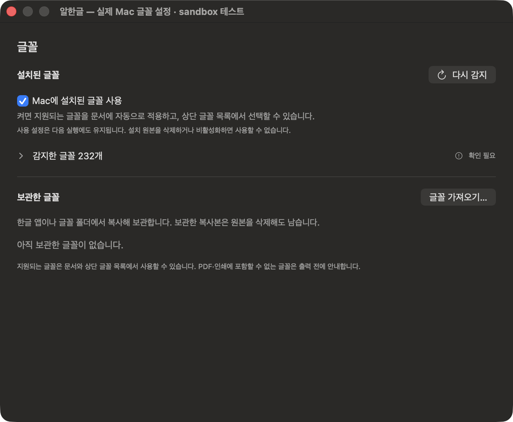
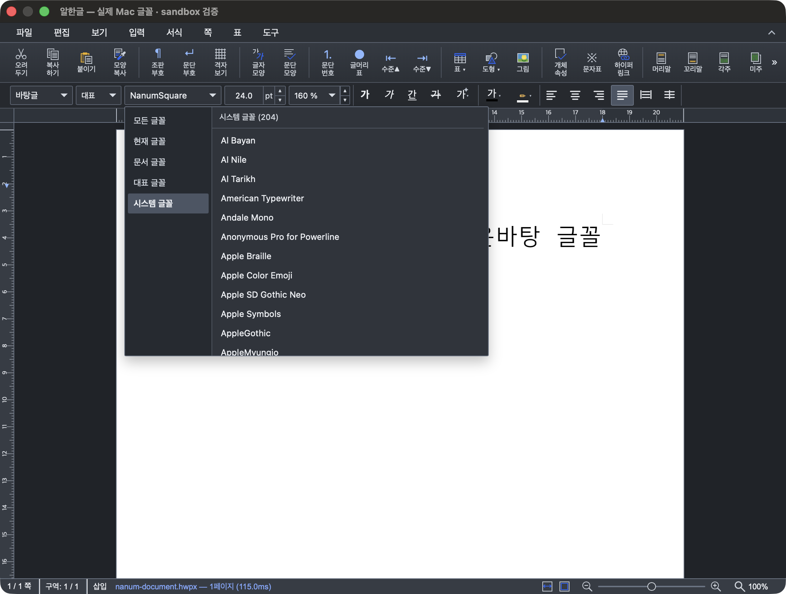

Mac에 설치된 글꼴 사용
Mac의 활성 글꼴 원본을 참조합니다. 원본을 삭제하거나 비활성화하거나 접근 권한을 잃으면 사용할 수 없습니다.
Mac 글꼴 사용 안내
사용 설정을 켜고, 익숙한 글꼴 목록에서 선택하세요.
원본과 접근 권한이 유지되면 다음 실행에도 자동으로 사용합니다.
알한글을 실행하고 설정 → 글꼴을 여세요. 단축키는 ⌘ + ,입니다.
Mac에 설치된 글꼴 사용을 켭니다. 처음 목록을 준비할 때는 잠시 기다려 주세요. 읽기 권한이 필요한 글꼴은 감지한 글꼴 목록을 펼쳐 접근 허용…으로 글꼴이 있는 폴더를 선택합니다.

문서 안의 도구 → 환경 설정 → 글꼴에서 Mac 글꼴 → 글꼴 설정 열기…를 눌러도 앱의 글꼴 설정으로 이동할 수 있습니다.
글자를 선택한 뒤 문서 상단의 글꼴 이름을 누르세요.
펼쳐진 목록에서 시스템 글꼴을 선택하면 Mac에서 감지한 글꼴을 찾을 수 있습니다. 지원되는 글꼴은 문서에 지정된 이름에 맞춰 자동으로 사용하며, 다른 글꼴로 바꾸고 싶을 때는 이 목록에서 직접 선택합니다.

원하는 글꼴을 선택한 뒤 일반 글자와 굵은 글자, 한글과 영문을 함께 확인해 주세요. 설치된 글꼴의 굵기·스타일과 문서가 요구하는 스타일이 다르면 대체 글꼴을 사용할 수 있습니다.
문서를 저장하고 다시 열어 글꼴과 본문을 확인하세요.
설정은 다음 실행에도 유지되므로 글꼴을 매번 가져올 필요가 없습니다. HWP/HWPX 문서를 전달할 때는 상대방 Mac에도 같은 글꼴이 있어야 동일한 글꼴을 사용할 수 있습니다.
PDF로 내보내거나 인쇄하기 전에는 결과를 확인해 주세요. 글꼴을 읽거나 출력 파일에 포함할 수 없으면 안내가 나타납니다. 기본 동작은 출력 취소이며, 안내에서 대체 글꼴 출력을 선택할 수 있습니다.
Finder 썸네일과 Quick Look은 앱과 다른 표시 경로를 사용합니다. 지원되는 글꼴을 사용하더라도 복잡한 문서의 배치와 화면이 다를 수 있고, 기존 썸네일은 macOS가 새로 요청할 때 갱신됩니다.
Mac의 활성 글꼴 원본을 참조합니다. 원본을 삭제하거나 비활성화하거나 접근 권한을 잃으면 사용할 수 없습니다.
지원되는 글꼴 파일을 알한글의 보관함에 복사합니다. 복사본은 원본을 삭제해도 남습니다. 먼저 해당 글꼴을 복사해 사용할 수 있는지 사용 조건을 확인해 주세요.
한컴 한글 앱 내부에만 있는 글꼴을 자동으로 추출하는 기능은 아닙니다. 한컴 앱을 삭제한 뒤에도 사용할 수 있는지는 글꼴이 Mac에 별도로 남아 있는지에 달려 있습니다.
macOS 서체 관리자에서 해당 글꼴이 활성 상태인지 확인한 뒤, 알한글 설정 → 글꼴 → 다시 감지를 누르세요. 감지한 글꼴 목록을 펼치면 이름과 스타일을 확인할 수 있습니다.
감지 목록에서 해당 글꼴을 펼쳐 이유를 확인하세요. 접근 허용…은 원본 폴더의 읽기 권한을 허용하는 동작입니다. 저장한 폴더 권한이 유효하지 않다면 폴더 다시 선택…으로 다시 지정하세요. 같은 이름의 충돌이나 미지원 형식은 폴더 권한만으로 해결되지 않습니다.
글꼴의 이름뿐 아니라 굵기·스타일과 원본 상태를 확인해 주세요. PDF·인쇄와 Finder는 각각 지원 범위가 다릅니다. 현재는 검증된 일반 TTF·OTF 글꼴과 Regular/Bold의 일반 가로 본문을 중심으로 안내하며, TTC의 개별 서체·가변 글꼴의 축·HFT와 복잡한 문서의 완전한 동일 표현은 보장하지 않습니다.
Mac에 독립적으로 설치되어 활성 상태로 남은 글꼴은 사용할 수 있습니다. 한컴 앱 안의 글꼴이나 삭제되는 원본까지 계속 사용할 수 있다고 보장하지 않습니다. 설치 여부가 다른 앱에서의 사용·복사 허가를 뜻하지 않으므로 글꼴별 사용 조건을 확인해 주세요.
이 안내는 Mac에 설치된 글꼴 사용을 다룹니다. Windows 폴더·ZIP 전달과 가져오기는 별도 작업으로 준비 중이며, 아직 이 절차만으로 Windows 글꼴 이전을 완료할 수 있다고 안내하지 않습니다.
해결되지 않으면 앱 버전, macOS 버전, 글꼴 이름과 증상을 알려 주세요. 문의 / 제보 방법 보기 →